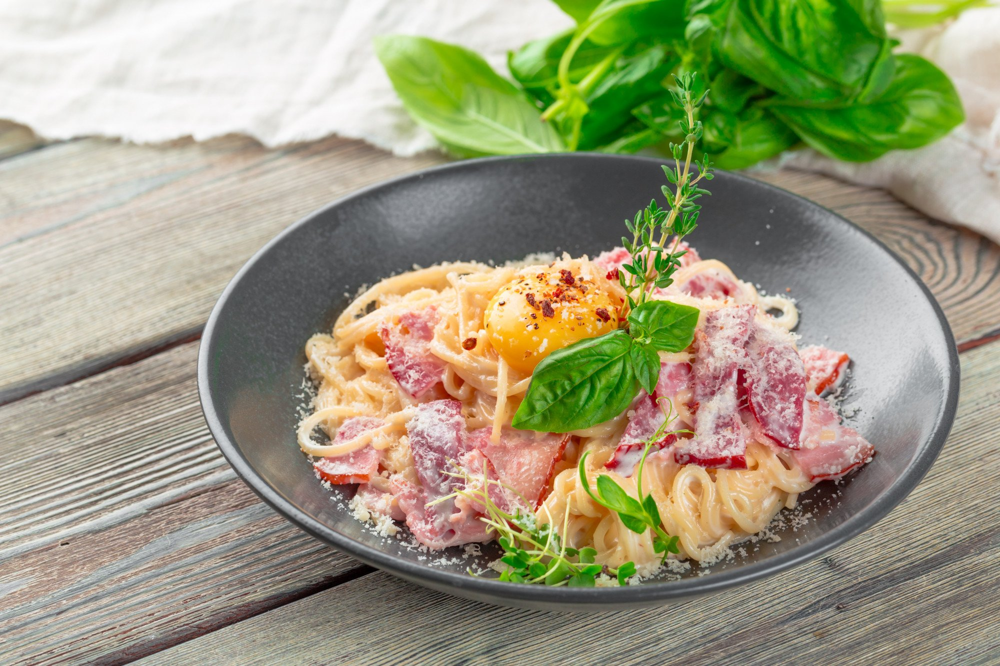

Рецепт пасты карбонара

Описание:
Паста карбонара — итальянская классика, которую любят во всем мире за нежную текстуру,
аппетитный аромат и насыщенный вкус. А еще за быстроту и простоту приготовления — основу блюда составляют всего три ингредиента.
Делимся рецептом и секретами приготовления классической Pasta alla carbonara — пасты карбонары с беконом.
Несколько рекомендаций, чтобы паста получилась по-настоящему вкусной и аутентичной:
- Если вы хотите приготовить блюдо, максимально приближенное к оригиналу,
используйте выдержанный овечий сыр пекорино романо и сыровяленые свиные щечки — гуанчале. Но найти такие ингредиенты в России может быть сложно.
Поэтому их заменяют сыром твердых сортов, обычно пармезаном,
и сырокопченым беконом с высоким содержанием мяса — их мы и приведем в рецепте. Техн
ология приготовления при этом одинаковая.
- В России в карбонару часто добавляют сливки, которые делают блюдо сочнее и
нежнее. А также чеснок и лук. В оригинальном рецепте всех этих ингредиентов нет. Впрочем,
если вы не стремитесь к полной аутентичности, тоже можете добавить их в блюдо.
-
Используйте для карбонары качественные спагетти — из твердых сортов пшеницы.
Они не развариваются и хорошо держат форму. А еще подходят для варки до состояния альденте, что важно при готовке пасты — это когда изделия слегка не доваривают.
Инредиенты на 4 порции:
- 400 г спагетти
- 200 г бекона
- 200 г сыра пармезан
- 4 яйца (желтки)
- 1–2 ч. ложки оливкового масла
- 2 ч. ложки специй («Итальянские травы»)
- соль, перец черный — по вкусу
Пошаговый рецепи приготовления:
- Отварите спагетти по инструкции на упаковке — до состояния альденте.
Если приведено только общее время приготовления, за 2–3 минуты до конца варки проверьте изделия на вкус. Легкая упругость указывает на готовность.
- Пока варятся макароны, займитесь другими ингредиентами. Измельчите на кусочки бекон, натрите мелко сыр.
- В глубокой миске соедините яичные желтки и сырную массу, перемешайте до однородности. Обычно на этом этапе добавляют сливки, если отходят от оригинального рецепта.
- Следующий шаг — обжарка бекона. Выложите кусочки на разогретую сковороду и готовьте пару минут, пока не вытопится часть жира и не образуется румяная корочка, затем выключите огонь.
Посолите, добавьте черный перец и специи, перемешайте. Если сковорода станет сухой, добавьте оливковое масло.
- Когда спагетти будут готовы, отлейте в стакан 150 мл воды, а остальную слейте. Выложите макаронные изделия к бекону и перемешайте.
- Добавьте в пасту яично-сырную массу и оставшуюся от спагетти воду. Быстро и основательно перемешайте. Если не уверены в качестве яиц, дополнительно прогрейте блюдо на огне пару минут.
Подавайте пасту сразу после приготовления в горячем виде, чтобы сохранить насыщенный вкус и аромат. Разложите по тарелкам, посыпьте мелко натертым пармезаном.
Можно украсить пасту свежими травами, ломтиками жареного бекона и тонко нарезанными овощами.
Или воспользоваться оригинальным способом подачи: в центре спагетти сделать углубление и разбить в него желток — это выглядит эффектно и в жизни, и на фото в социальных сетях.